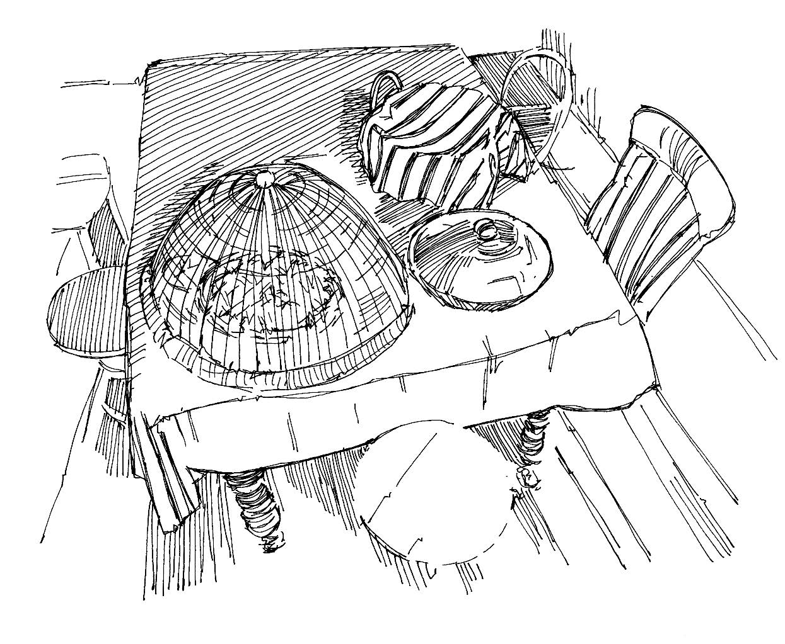

Des germes peuvent être présents ou se reproduire sur les aliments, propageant les infections et rendant les personnes malades.
Les germes présents sur la nourriture qui n’est pas propre ou couverte peuvent aider à transmettre des maladies diarrhéiques (notamment le choléra ) et d’autres infections comme l’hépatite A et E , la typhoïde et l’anthrax .
Ce que vous devez savoir
Les aliments qui ne sont pas propres, couverts et bien cuits peuvent contenir des germes rendant les personnes malades.
Les membres de la communauté peuvent ne pas savoir ou comprendre comment les aliments peuvent être contaminés ou comment une maladie peut se propager par le biais de la nourriture. Il est crucial d’expliquer l’importance d’une bonne hygiène des aliments afin que les personnes puissent se protéger et protéger leur famille des maladies.
Hygiène des aliments
Lavez-vous les mains avec du savon ou des cendres avant de préparer de la nourriture.
Cuisez bien tous les produits d’origine animale, notamment la viande et les oeufs, afin d’éliminer les germes. Assurez-vous que les produits d’origine animale restent chauds.
Couvrez les aliments et l’eau pour les protéger de la saleté, des mouches et d’autres insectes et animaux.
Lavez les ustensiles (assiettes, couverts, etc.) avec de l’eau propre et du savon. Utilisez un égouttoir pour faire sécher la vaisselle.
Lavez les fruits et légumes soigneusement avec de l’eau propre.
Si vous utilisez du bois ou du charbon pour cuire la nourriture, assurez-vous que la pièce dans laquelle vous cuisinez soit bien aérée.
Messages à la population
Lavez-vous les mains avec de l’eau et du savon avant de cuisiner, ainsi qu’avant et après manger.
Les aliments cuisinés devraient toujours être conservés correctement et recouverts pour éviter toute contamination par la saleté, les mouches et d’autres insectes et animaux.
Tous les produits d’origine animale, notamment la viande et les oeufs, doivent être bien cuits avant d’être consommés, pour éliminer les germes.
Les légumes doivent être bien cuits ou bien lavés à l’eau.
Les fruits et légumes crus doivent être lavés à l’eau propre.

Couvrez les aliments et conservez-les de manière hygiénique
Messages communautaires
Voir les messages de la communauté suivants pour soutenir hygiène des aliments: